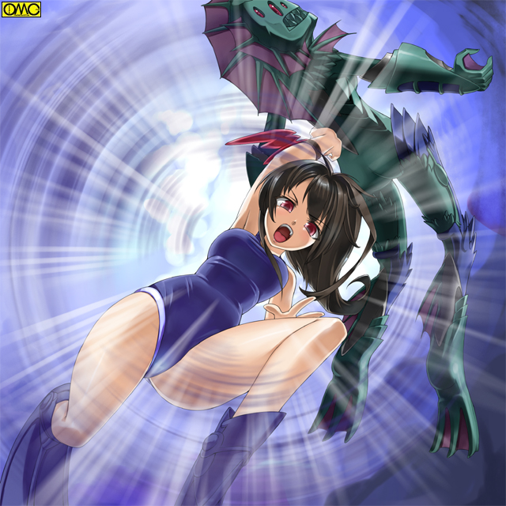

セーラのふくらはぎを狙ったピラニアアマッドネスの噛みつき。
だが浅い歯型がついただけに終わった。
「このっ」
大振りのパンチをかわして水中に戻るピラニアアマッドネス。
「な…なんだ？ 女のクセになんて固いんだ…噛み千切ってやるつもりだったのに」
一方のセーラは足にダメージを負い膝をつく。
（増強した筋肉のおかげでもっていかれずにすんだか…それにしても思ったより鈍重。いくら水中用でも敵も水中をテリトリーとする魚型。アドバンテージはなしで競り負けるんじゃ…）
考えているとまたピラニアが飛ぶ。
「ド…ドレスアップ」
とっさにエンジェルフォームに戻る。そのおかげでカバーが間に合い難なきを得た。
「ちっ」
攻撃をはずしたところで舌打ち。半魚人は再びプールに飛び込む。ものすごい勢いで反対側に。
「ま…待ちやがれ！」
追うべく走り出すがピラニアの異形はセーラー服の少女がプールサイドを走るより早く泳ぎきり、そしてそのまま窓をつき破って逃走した。
「キャストオフ」
ヴァルキリアフォームに。そしてフェアリーフォームに超変身。
空を飛んで追いかけるが既に茂みの中に。
「チキショウ。まだそうは遠くに…」
しかし空中に浮かぶレオタードの少女が注目されないはずもない。
慌ててセーラも飛んで逃げた。
戦乙女セーラ
ＥＰＩＳＯＤＥ６「竜巻」
人気のない校舎裏に降りてとりあえずエンジェルフォームに戻る。ガントレットはリストバンド状に変えた。
「セーラ様。ご無事ですか？」
キャロルが来たからだ。本来の高岩清良の姿で一緒のところを見られたくなかった。
幸いこのフォームの時はガントレットを収めた今では、一見した限り在校生の女子に見える。
「ああ。逃げられちまったがな。こっちも逃げたが…」
逃げたのは目撃者からか？ それとも闘いから？
「それよりキャロル。やはりあの姿は使えないんじゃ？」
鈍重さを突かれて攻撃を許したことをさしている。
「そんなことはありません。陸の上での動きの鈍さは他の姿を利用すればカバーできます。それに水の中では無敵です。毒素にも強いのです。現にほら。アマッドネスが奴隷を作り出すエキスも無害」
セーラははっとなる。言われて見ればこれまでの「被害者」は何かをされて女性化のうえに一時的でも支配されている。
ところが噛み付かれた足の傷がない。
「あれ？ 怪我したはずなのに……」
「一瞬で男が女に変わるほどです。肉体が瞬時に再構築されているのですよ。だから普通の人においての軽傷などは一度チェンジすれば消えます」
「チェンジか…」
ふと遠い目になるセーラ。
「一度ヴァルキリアを通さないと超変身できないというのは不便だな。一気にいければフェアリーの非力をマーメイドで。マーメイドの重さをフェアリーでカバーできるんだが」
「そうですね。まだ覚醒が完全じゃないからかと。ところでセーラ様。先ほどの『ドレスアップ』とは？」
言われて頬を染めるセーラ。少女の姿だけに可愛らしい。
「あ…あれか。いや足を狙われていたからそこまでカバーされているフォームになりたかったんだ。エンジェルフォームに戻るというのはまだやってなかったから、気持ちを込めるために言ってみた」
「あ…よろしいかと。とっさのガードには」
後は黙り込む。セーラがマーメイドフォームに対して低い評価をしたことを覆そうにも、本人がその利点を認めないといけない。
それには何より使って見ることだが大ピンチに陥って「怖気づいている」のも感じ取れた。
結局それを克服するには…
一方、本来の男の姿に戻った魚住はほくそえんでいた。
（これでセーラはあの姿はしばらくは使えない。何も倒さなくてもいい。奴が水に入れないようにさえすれば。後は川沿いを中心に家来を増やしていけばやがてみんなが復活した時にも便利だ。セーラがきたら川の中に逃げればいい。何しろ奴は人魚になれないのだからな）
それこそが狙いだったのだ。
今度は被害者が一人だったため怪人の正体が特定できた。
「魚住か…だが…」
渋い表情の清良。そう。正体が割れたし目的である恨みも晴らした。
そしてセーラにも正体がばれていると知れば学校にはくるまい。
「くそっ」
やるせない気持ちで清良は歩き出す。
また被害者が出たということで部活は中止になっていた。
そのはずなのに体育館から音がする。
不思議に思った清良が覗き込むとそれは新体操の練習中の友紀だった。
練習中だがレオタード。たださすがに本番と違い地味なもの。
華麗なテクニックで舞う。
しばらく魅了されていたが
「なにしてんだ？ 騒ぎがあったからみんな引き上げたろ」
知った相手と言うこともありはいっていく。
「清良…うん。知ってる。でも練習したかったの」
「試合が近いのか？」
友紀は首を横に振る。
「最近変な事件が立て続けに起きているでしょ。恐くて…でもこうして新体操をしているとそれを忘れられるの」
この時点でこのエリアにおいての「犠牲者」は男子のみ。
だからといって女子が犠牲にならない保証もない。
その不安と友紀は戦っている。
（俺はなにやってんだ…ちょっと攻撃された程度でびびっちまって…女がこうしてがんばっているのに…奴らと戦える俺が逃げてどうする？）
「なぁ。ちょっと話いいか？」
「…………うん？」
二人は体育館の床に直接座り込む。清良はあぐら。友紀は足を横に投げ出す座り方。
「例えばさ、お前が新しい技をマスターしたとする」
「うん」
新体操の話と友紀は解釈した。
「それを試合で使うのは恐くないか？ 今までの技で無難にやってみようとか思わないか」
「うーん。恐いと思うよ」
真面目な表情だったこともあり友紀も真面目に返答する。
「でもやるしかないもん。そうしなきゃ次にいけないし」
「問題はそこだ。どうやってその最初の一歩を踏み出すんだ？」
恐ろしく真剣な表情。それも当然。いわば敵前逃亡。その屈辱…いや。それよりもみんなを守れる力を持ちながら臆したことがその険しい表情をさせていた。
「やっぱり…不安に立ち向かうには勇気しかないでしょ？」
当たり前のように、だが本人も自分に言い聞かせるように言う。
だが忘れてしまったことを思い出させた。
清良は優しい表情で語りかける。
「勇気…か。お前の名前と一緒だな」
「なによ。真面目に答えているのに」
頬を膨らませる。
「いや。違うよ。お前は命の次にそんないい名前を親からもらったんだなと思ってさ」
「……うん。この名前好きよ」
微笑む。その笑みが清良に再び守るための闘いを決意させる。
「わかった。俺が送ってやるから好きなだけ続けろ」
「ありがと。でも…清良。何かあったの？」
不安が出ていたようだ。それを悟られぬように清良はことさらぶっきらぼうに言う。
「なんでもねぇよ」
翌日。予想通りに魚住は登校して来ない。
（いくら俺に負けない自信があるといっても、わざわざ邪魔者のいるところには来ないか。どうする？ この様子じゃ家にいるとも思えない。奴が行動を起こしてからいくしかないな）
昼休みに学校の屋上でパンを食べながら考える清良。
食べ終わるとそのままごろんと横になる。
すでに午後の授業開始。誰も他にはいない。
昼過ぎ。春めいてきた川沿い。水遊びにはまだ早いが河川工事の作業員などがいる。
その一人が川の中央を指して「おい。あれを見ろ」と叫ぶ。
まだ水遊びの出来ない季節なのに学生服姿の少年が立ち泳ぎをしている。
「なにしている。この水温でそんな格好じゃ死ぬぞ」
親切心の忠告に薄ら笑い。
そして少年はピラニアアマッドネスに変化した。獲物を見つけて舌なめずりをしていた。
「ば…化け物ーっっ」
作業員たちは我先に逃げ出したが遅れた一人が噛み付かれ、哀れにも性別を反転させられた。
学校の屋上。教室にいると飛び出して不審に思われる。
幸か不幸か「不良」のレッテルを貼られている。初めからいないなら「サボり」で片付くだろう。
何より人前で「変身」したくなかった。
待っていた清良の脳裏に「電流」が走る。
「きやがった」
清良は跳ね起きると肩幅に足を開いて立つ。同時に右手を太陽に。左手を屋上に向ける。
紅と蒼のリストバンドがガントレットに変化。
右手を１２時から９時の位置に。左手を６時から３時の位置に。
それを体にひきつけ前方でクロス。
「変身」
一瞬にしてセーラ・エンジェルフォームに。立て続けに
「キャストオフ」
体操着姿に。現状ではこれを経ないといけないのがもどかしい。
それを態度で示すかのように走り出す。走りながら紅い手甲を叩くように触れる。
「超変身」
ピンクのレオタード姿になると宙へと舞う。
妖精の翅が彼女を高速の世界へと誘う。
そしてセーラは「嫌な感じ」の走ったほうに飛んでいく。
情報が伝わらず逃げ遅れた男たちを、次々と文字通り毒牙にかけるピラニアアマッドネス。
だが飛来した天敵を察知する。
「今日はこのくらいにしとくか」
まるで一仕事終えたかのような言い草。余裕綽々である。
「ふん。お前は水の中には入ってこれまい。捕まりはしない」
ぐんぐんと接近してくるセーラをあざ笑う。そしてからかうように水の上に撥ねてまで見せる。
「このっ」
加速するが川の中に逃げられる。
「くっ」
さすがに躊躇する。そしてそのまま飛んで追跡を続ける。
「未確認生命体」出現に人々が避難したといえど幾人かはいる。
その面々は空飛ぶ少女に面くらい、中には指まで指すものもいる。
しかしセーラにはそれを気にしている余裕がない。
水を…正確にはマーメイドフォームを恐がらせることに成功したのをピラニアアマッドネスは確信した。
何しろ人目につこうが空を飛び続けるのがいい証拠。
（くくく。臆病者め。敵ではないわ）
完全に余裕を持ったピラニアアマッドネスはわざと水面近くを泳いでいる。
そして川が二つに分かれているところまできた。
さらに弄ることを思いついた。その寸前であえてもぐったのだ。
「ア…アイツ…キャロル。ピラニアどっち行ったかわかる？ あたしの方はアイツがもぐったら感じが途絶えちゃったのよ」
変身してから１０分以上。既に言葉遣いが変化している。セーラはそれに違和感を感じていない。
「わ…わかりません。やはり水中でないと」
「水の中…」
嫌な汗が出る。マーメイドで傷つけられた思い出が。
空中に浮いたまま下を向いてしまう。己の服に目が行く。
「レオタード……」
新体操をして不安と戦っていた少女を思い出す。
「そうよね。勇気をもらうわよっ」
セーラは飛び込む角度で降下する。
「超変身」
左腕の手甲を押すとレオタード姿から体操着姿。そして濃紺の水着姿にと変わる。
美しいスタイルの「人魚」は魔の潜む川の中へと飛び込んだ。
それははるか５００メートル先を行くピラニアアマッドネスを驚愕させるには充分だった。
（馬鹿な…まずい。飛び込んだらその性能に気がつく）
その焦りが皮肉にも信号となってセーラに居場所を教えていた。
飛び込んで３分以上。「素潜り」なのに息が続くのにやっと気がついた。それほど違和感がなかった。
（何で息が続くのかしら？）
（セーラ様。聞こえますか？）
（キャロル？）
遠く離れた使い魔だ。
（その姿の時は長い髪がえらのように酸素を取り込みます。だから水中では行動に制約がありません。それにほら。陸の上より体が軽く感じませんか？）
（あ…いわれて見れば）
（水中には鯨など大型の生物がいますからね。それからわかるように水が支えてくれます。そして足元をご覧ください）
言われるままに足を見るとサンダルのはずが足ひれになっていた。
（棒を武器にするくらいならこのくらいありよね）
そして同じ水中に飛び込んだことで、空中ではわからなかったピラニアアマッドネスの位置も感じ取れた。
彼女は猛追を開始した。
下流へと逃げるピラニアアマッドネス。
だがその動きが鈍くなる。
（な…なんだ？ この水は…苦しい）
ついにはもがき苦しみ止まってしまう。
その間に見えるところまで追いついてきた。
（何で逃げないのかしら？ まだ馬鹿にしているのかしら？）
（いえ…恐らくは海水のせいかと）
（あっ。ピラニアって淡水魚）
川と海の両方をテリトリーとする魚は鮭などがいる。しかしピラニアは違う。
（まって。もしかしてここって東京湾に近いのかしら？）
水。そしてそれ以上に汚染された海底。その毒素にピラニアアマッドネスは苦しめられている。
（皮肉なものだわ。環境破壊に助けられるなんて）
だが同情は無用。セーラは持っていた伸縮警棒を伸ばす。
その「長きもの」は水中ゆえか銛へと変化する。
小さいものの先端は海神ポセイドンの三叉の矛のようになっていた。
陸の上では苦しめられた鈍重さを作り出した元凶の筋肉。
それがここではバネとなり、銛を弾丸のように撃ち出した。
止まった的である。その狙いは外れない。
毒素。そして銛のダメージでもう逃げられない。
やっとセーラが追いついた。
ピラニアアマッドネスを捕まえると海底に潜る。そして海底にしっかりと二本の足で立つ。
（さぁ。あなたを解放してあげるわ。ちょっと痛いけどガマンしなさいね）
念で伝えるとセーラはその膂力でピラニアアマッドネスを担いだ状態で、力任せにぐるぐると回転しはじめる。
やがて渦へと変化する。海中だが竜巻のようになる。
回転が最大になったところでピラニアアマッドネスを放す。否。渦の中に放り投げる。
下から上に。錐もみ状態で舞い上げられる。
そのまま海中から飛び出し、回りながら水面に叩きつけられる。
叩きつけられた衝撃の水柱。その後でピラニアアマッドネスの爆発による水柱が出来た。

このイラストはＯＭＣによって作成されました。
クリエイターのていくあうとさんに感謝！
（やりましたね。セーラ様）
（うん。それもユウキのおかげ）
（えっ？ 友紀様？）
（ふふっ。それもあっているわね）
セーラは不安を解消したことで自然な「女性的な笑み」を浮かべていた。
（さぁ。魚住君を…もう魚住さんね。助けないと）
優雅な足捌きはプロポーションも手伝い本当に人魚のように見えた。